Argues that web-agent reliability is now a harness and infrastructure engineering problem, not a model-capability problem, and names the specific unsolved pieces (agent authentication, agent trust/identity, layout consistency at scale)
This maps Klein's own three-pillar framing (multimodal, harness engineering, reliable infrastructure) onto the capabilities-overhang argument that opens the talk, and treats WebMCP and agent trust as the open ends he names but does not resolve; the edges are our inference of how the pieces relate, not stated dependencies (ours).
“there is a massive capabilities overhang in computer use. The models are good enough, but we haven't done the engineering work to solve it”
said at 05:40“when you build a harness optimized for the domain that your agent is operating in, it can actually achieve, you know, above model results in that domain”
said at 04:08“They're multimodal, they're harness engineered, and they have reliable infrastructure”
said at 06:42“We launched something if we so-called browser.sh, which actually publishes skills for websites”
said at 07:46“If your infrastructure renders a page in a mobile layout one time and then like in a desktop layout the second time, it's going to have inconsistent results”
said at 09:49“Chrome just added WebMCP, which I think is really, really cool. Websites can now publish MCP servers within their page that your agent can take advantage of without pre-installing the actual MCP”
said at 10:52“there needs to be almost like a Verisign moment for web agents where who can be the certificate issuer in saying my agent is trusted in this agent vendor is trusted”
said at 12:53Klein is Browserbase's founder, so the framing that this is 'an engineering problem you can solve today' (rather than a model-capability wait) doubles as a pitch for infrastructure providers like his own company — worth weighing his specific claims (e.g., 'no SOC 2 compliant Mac mini setup at scale') against that incentive (ours).
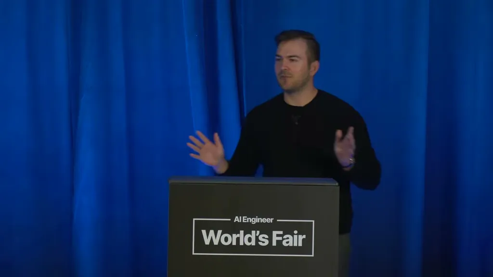
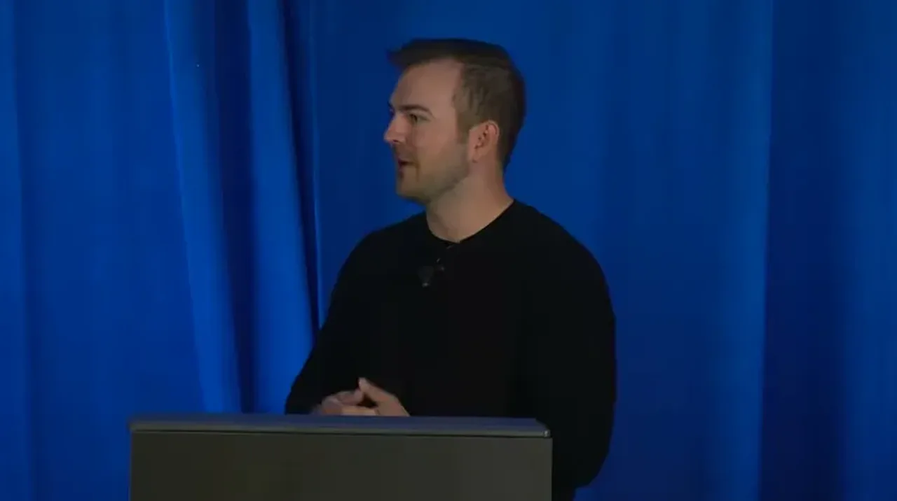
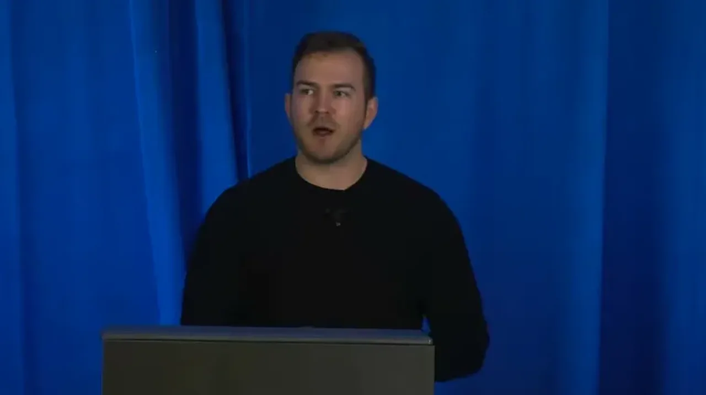
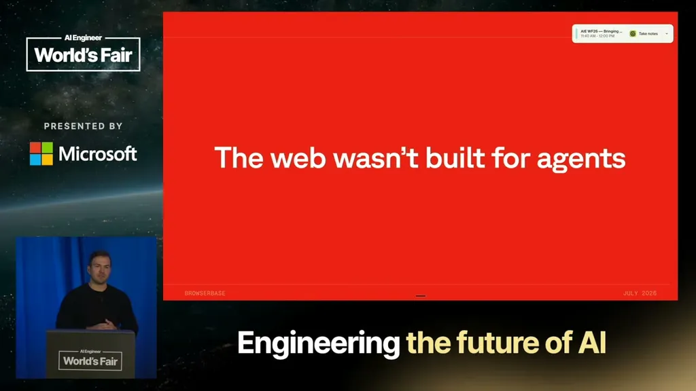
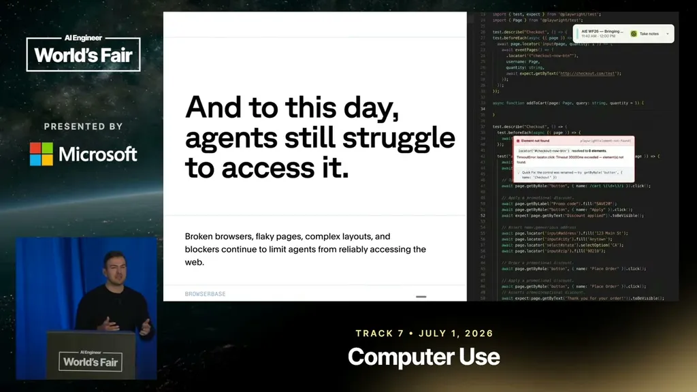
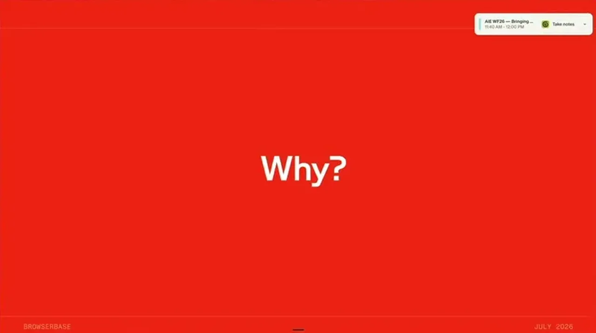
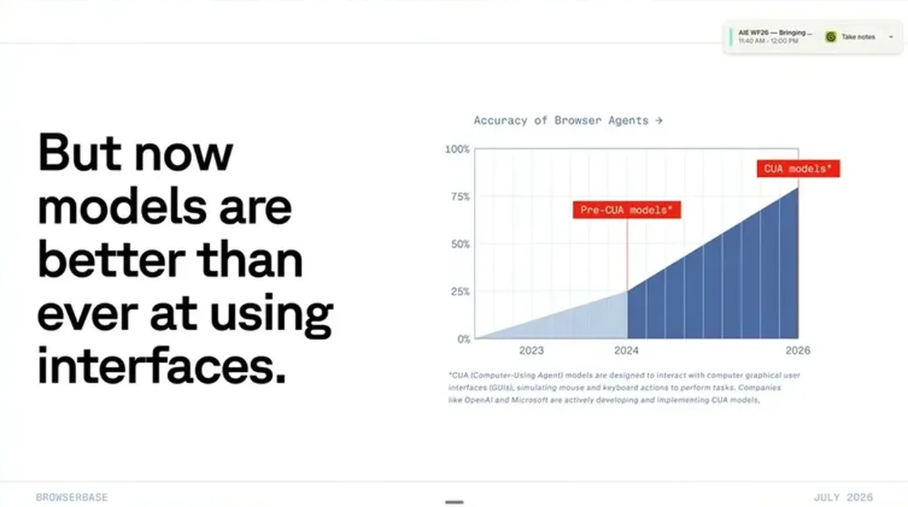
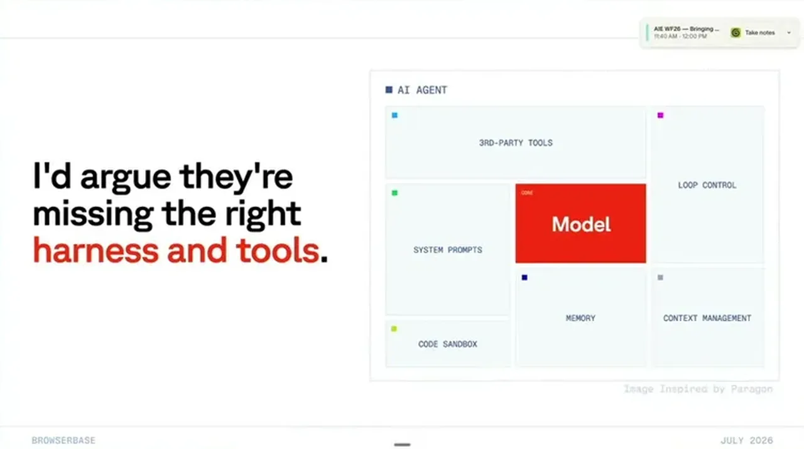
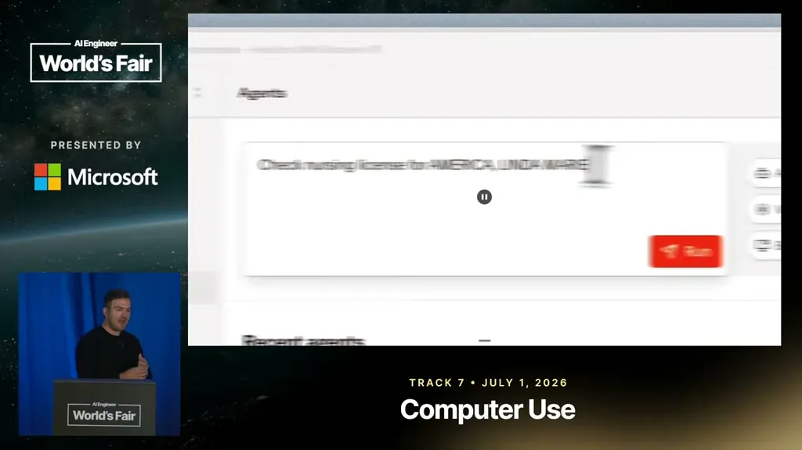
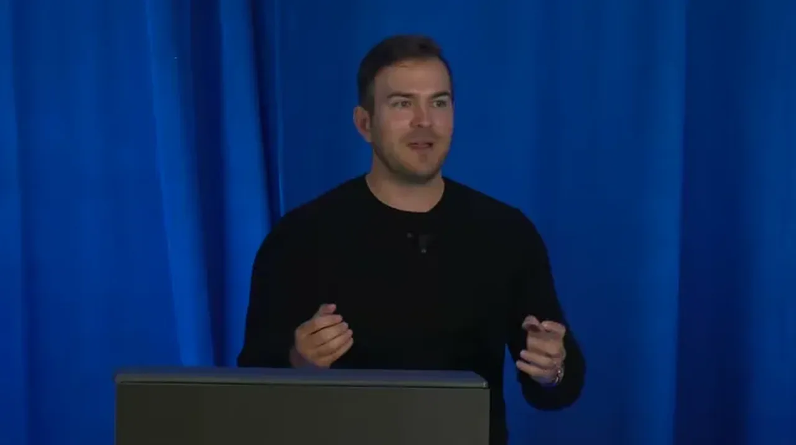
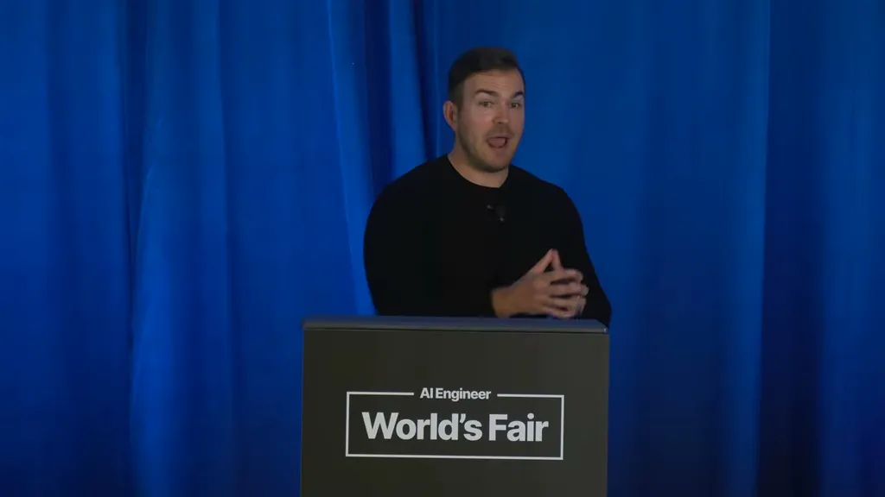
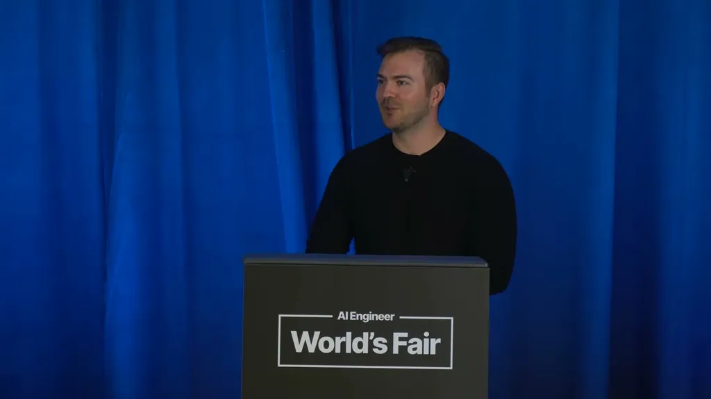
| Stance | Claim | t |
|---|---|---|
| asserts | There is a massive capabilities overhang in computer use: models are good enough, but the engineering work to extract that capability hasn't been done. | 05:40 |
| asserts | Building a harness optimized for a specific domain can achieve above-baseline model results, as shown by Factory outperforming Claude Code on the same underlying model. | 04:08 |
| recommends | Reliable browser agents need to be multimodal, harness engineered, and backed by reliable infrastructure. | 06:42 |
| asserts | Browserbase launched browser.sh, which publishes reusable skills for websites so an agent can observe available tasks before visiting a site. | 07:46 |
| warns | If infrastructure renders a page in a different layout (e.g. mobile vs desktop) across runs, the agent gets inconsistent results. | 09:49 |
| asserts | Chrome added WebMCP, letting websites publish MCP servers within the page that an agent can call without pre-installing the MCP. | 10:52 |
| warns | The industry still lacks a 'Verisign moment' for web agents: no established certificate-issuer model exists yet for certifying that a given agent and vendor are trustworthy. | 12:53 |
| predicts | Solving computer use will accelerate the diffusion of AI into the broader real economy beyond AI-native Silicon Valley companies. | 15:31 |
| predicts | Klein predicts that a year from now, interest in this space will be much higher because models, techniques, and tools are all improving. | 17:33 |
Machine-readable copy embedded in this page (script#ontology) and in the corpus ontology.